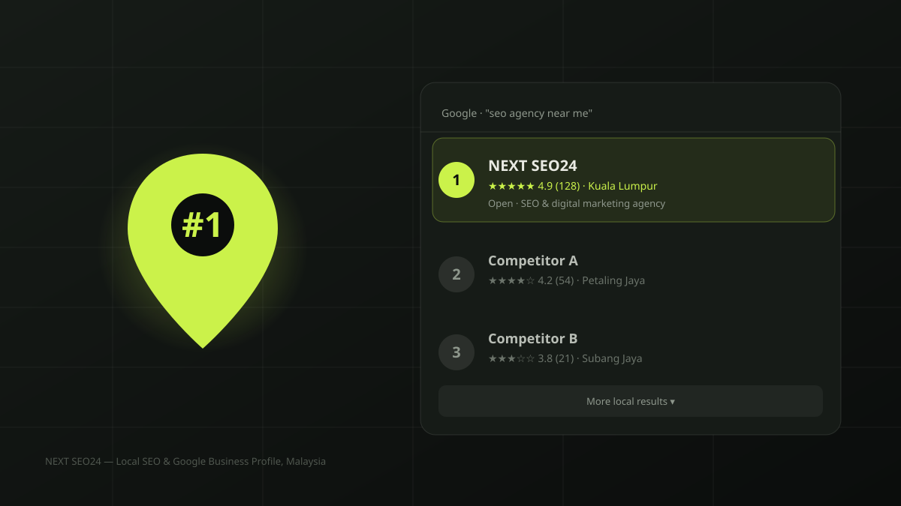

Local SEO for Malaysia: how to rank #1 on Google Maps
"Near me" searches now drive more walk-ins and phone calls than most businesses' entire website. If your Google Business Profile isn't in the top 3 of the Local Pack for your category and area, you are handing customers to a competitor. Here is how the local pack actually ranks — and a checklist to fix it.
Every Malaysian business owner we talk to has run a search for their own category — "seo agency KL", "dentist Bangsar", "kedai runding hartanah Subang" — and either been proud or disappointed by where they show up. The map results at the top of the page, known as the Local Pack, get the majority of clicks for local searches. Ranking outside the top 3 there is close to invisible, even if your website ranks well in the standard organic results below.
The three ranking factors Google actually uses
Google has confirmed in its own Business Profile documentation that the Local Pack is ranked on three signals working together. Understanding each one tells you exactly where to spend your effort.
- Relevance. How well your Business Profile matches what the searcher typed — your primary category, business description and the keywords in your reviews and posts all feed this.
- Distance. How close your pinned location is to the searcher (or to the area they typed, e.g. "SEO agency Petaling Jaya"). You cannot fake this — it rewards a genuine, correctly pinned address.
- Prominence. How well-known and well-reviewed your business is — both on Google (reviews, photos, Q&A engagement) and off it (mentions, citations and links from other Malaysian websites).
Set up your Google Business Profile correctly first
Most local ranking problems in Malaysia trace back to a poorly configured profile, not a lack of effort elsewhere. Before chasing reviews or citations, get these fundamentals right:
- One profile, one exact address. Duplicate listings — common after office moves or rebrands — actively split your ranking signals. Search your business name in Maps and merge or remove duplicates.
- Primary category first. Choose the single most accurate category (e.g. "Marketing Agency" over the vaguer "Consultant"), then add secondary categories for real additional services only.
- NAP consistency. Your Name, Address and Phone number must match exactly across your website, Facebook, Instagram and any directory listing — Google cross-checks this to confirm you are a real, stable business.
- Complete every field. Business hours (including public holidays), a Malaysian phone number, service areas, attributes, and at least 10 real photos of your premises, team and work.
Reviews: the fastest lever for prominence
Review velocity — how many recent reviews you earn per month — is one of the strongest and fastest-moving prominence signals in Malaysia's competitive urban markets. A profile earning 4-6 genuine reviews a month will typically outrank a static profile sitting on 50 old reviews. Build a simple habit: ask every satisfied customer in person or via WhatsApp immediately after service, using a direct review link. Respond to every review — good or bad — within 48 hours; Google reads response rate as an engagement signal, and buyers read it as trust.
Citations and local links that move the needle
Beyond Google itself, prominence is built through consistent mentions of your NAP details across the Malaysian web. Prioritise quality over volume:
- Core directories. A consistent listing on major platforms Malaysians actually use, not generic international directories nobody visits.
- Industry-specific citations. Association memberships, chamber of commerce listings, and trade directories relevant to your sector carry more weight than generic ones.
- Local press and blogger mentions. A feature on a KL lifestyle or business blog, with your business name and area, builds real-world prominence that Google's algorithms are specifically designed to detect.
- A locally optimised website. An on-site location page with your address embedded as a Google Map, area-specific content, and schema markup reinforces every signal above.
Multi-location and service-area businesses
Businesses serving Klang Valley, Penang and Johor Bahru from one office often make the mistake of trying to rank a single profile for every city. Google's guidelines are strict here: a separate, individually verified profile is needed for each staffed location, while service-area businesses without a public storefront should hide their address and define clear service-area boundaries instead. Trying to game this with fake addresses is one of the fastest ways to get a profile suspended.
A quick local SEO checklist for Malaysian businesses
- Claim and fully verify your Google Business Profile with a real, staffed address
- Set one accurate primary category and relevant secondary categories
- Match your NAP exactly across your website, socials and directories
- Add 10+ real photos and update them quarterly
- Post a Google Business update at least twice a month
- Build a steady, ongoing stream of genuine reviews and respond to all of them
- Get listed on the directories your actual customers use
- Add a location page on your website with embedded map and schema markup
Local SEO compounds — a profile that consistently earns reviews and stays active pulls further ahead of competitors every month. If you would like us to audit your current Google Business Profile and show you exactly what is holding you back from the top 3, reach out below.
Frequently asked questions
Do I need a physical address to rank on Google Maps in Malaysia?
Yes, in almost all cases. Google Business Profile requires a real, staffed location or a documented service area for service-area businesses. Virtual offices and PO boxes that are not staffed typically get suspended once discovered.
How long does it take to rank in the Google Maps local pack?
A fully optimised, newly verified profile can appear in the local pack within a few weeks for low-competition terms. Competitive categories in KL or Penang with established competitors usually take 3-6 months of consistent reviews, posts and citation building.
Do reviews really affect Google Maps ranking?
Yes. Review count, average rating, recency and how often you respond are all part of Google's local ranking factors, alongside relevance and distance. A steady stream of recent, keyword-rich reviews outperforms a large batch of old ones.
Want your business in the top 3 on Google Maps?
Get a free audit of your Google Business Profile — what's holding your ranking back, and a clear plan to fix it. No obligation.
Chat on WhatsApp →